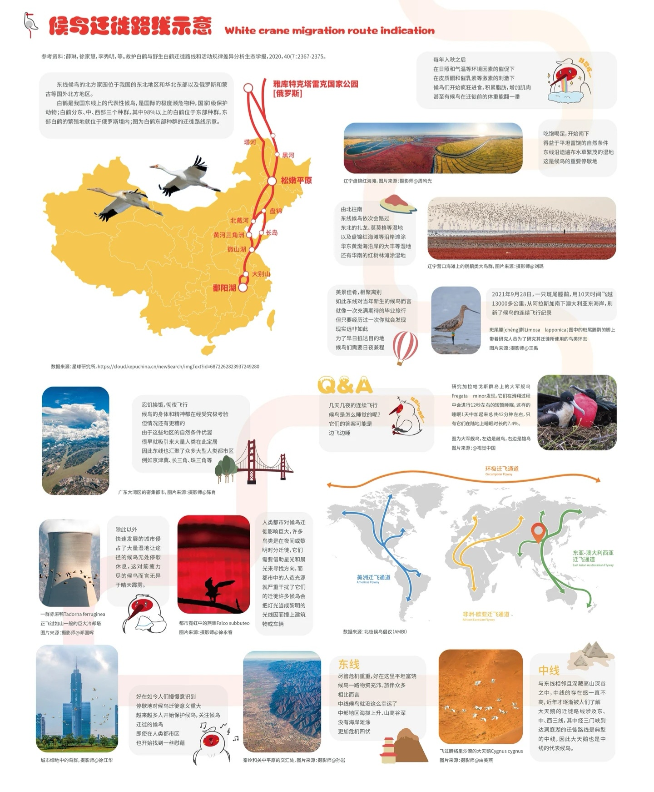
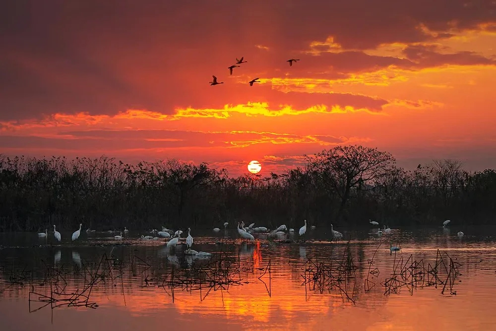

跨越万水千山，只为飞向温暖的家
鄱阳湖位于东亚—澳大利西亚候鸟迁飞路线（EAAF）的中段，这条路线是全球九大候鸟迁飞路线之一，覆盖从俄罗斯远东、中国东部到澳大利亚和新西兰的广大区域。每年有超过5000万只候鸟沿着这条路线迁徙，鄱阳湖是其中最重要的中途停歇地和越冬地之一。

白鹤的迁徙路线主要分为东线和西线。东线种群在俄罗斯西伯利亚的雅库特地区繁殖，秋季向南迁徙，途经中国东北的扎龙、向海等自然保护区，最终抵达鄱阳湖越冬，全程约5000公里。来年春季再沿原路北返。这条迁徙路线的每一步都充满了艰险——长途飞行消耗大量体力，沿途栖息地破坏、非法捕猎、极端天气等都是候鸟面临的致命威胁。
鄱阳湖候鸟的迁徙呈现明显的季节规律。每年10月中下旬，首批候鸟——主要是鸿雁、灰鹤等先头部队抵达。11月至12月，候鸟种类和数量达到高峰，白鹤、白枕鹤、东方白鹳等珍稀候鸟纷纷到来。次年2月下旬，气温回升，候鸟开始陆续北返。3月中下旬，大部分候鸟离开鄱阳湖，踏上返回繁殖地的漫长旅程。
候鸟的迁徙是一场生命的壮举，但也面临着严峻的挑战。沿途栖息地的丧失和退化是最主要的威胁——湿地被开垦、城市扩张、水利工程改变水文节律等。此外，非法捕猎、农药使用、高压电线碰撞、气候变化等因素也在威胁着候鸟的生存。保护候鸟，不仅需要保护鄱阳湖这一个越冬地，更需要保护整条迁徙路线上的栖息地。
